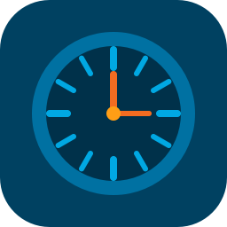

Anass Bounhar
Infrastructure, automation, timesheets, and cross-platform tools for operations teams.
Projects

LV Timesheet Studio
Turn Dynamics time-entry Excel exports into the monthly LV timesheet workbook with region rules and analytics.
Hosts Sync
Keep your system hosts file synchronized from a Git repository on Windows, macOS, and Ubuntu.
JBoss Manager
Check, start, stop, restart, kill, and clean up JBoss services on Dev and Prod servers over WinRM.
PDF PFX Sign
Sign a PDF with a PFX certificate on this computer. Keys and passwords never leave the device.